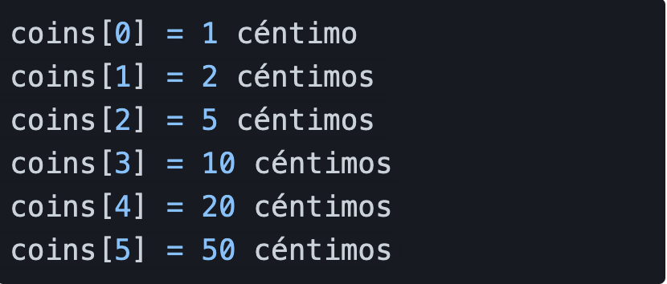

Simulador de monedas
Tomado de https://adventjs.dev/challenges/10
Para mejorar la productividad de la tienda en la que trabajamos, vamos a crear una pequeña máquina que calcula el mínimo número de monedas que debemos usar para dar el cambio de una compra en metálico.
Las monedas para cambio que puedes usar son estas:

Tenemos que crear una función que recibe el número de céntimos que hay que devolver al cliente y la función nos da un array con la combinación de monedas mínimas que debemos usar para conseguirlo.
Por favor devolver: